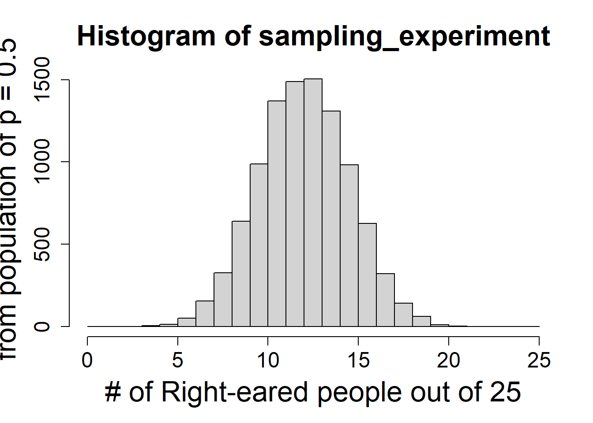

Using the bat paper from class (Geipel et al. 2021), let’s consider how to analyze data showing all 10 bats chose the walking over the motionless model.
binom.test(10,10)
Exact binomial test
data: 10 and 10
number of successes = 10, number of trials = 10, p-value = 0.001953
alternative hypothesis: true probability of success is not equal to 0.5
95 percent confidence interval:
0.6915029 1.0000000
sample estimates:
probability of success
1
We use the binom.test function. We only need arguments for # of succeses and # of trials. By default it runs a 2-sided test against a null hypothesis value of p = .5. You can see how to update thee options by looking at the help file.
?binom.test
Note the confidence interval is assymetric since its estimated to be 1! We can see other options using the binom.confint function from the binom package.
All of these correct for the fact that most intervals use a normal approximation, which as you remember from our earlier discussions is not good when sample sizes are small and/or the p parameter is extreme (close to 0 or 1).
Practice!
Make sure you are comfortable with null and alternative hypotheses for all examples.
1
Are people eared (do they prefer one ear or another)? Of 25 people observed while in conversation in a nightclub, 19 turned their right ear to the speaker and 6 turn their left ear to the speaker. How strong is the evidence for eared-ness given this data (adapted from Analysis of Biological Data)?
state a null and alternative hypothesis
Ho: proportion of right-eared people is equal to .5
Ha: proportion of right-eared people is note equal to .5
calculate a test statistic (signal) for this data
19/25#sample proportion
[1] 0.76
The signal from the data is the proportion of right-eared people 0.76
Make you understand how to construct a null distribution
using sampling/simulation (code or written explanation)
sampling_experiment =rbinom(10000, 25, .5)hist(sampling_experiment, breaks =0:25, xlab ="# of Right-eared people out of 25", ylab ="Probability of being drawn \n from population of p = 0.5", cex.main =2, cex.axis =1.5, cex.lab =2)

by using an appropriate distribution (code or written explanation)
Each of these show the expected distribution of signal under the null hypothesis. Note this implies multiple samples are taken. This is theory that underlies NHST (null hypothesis significance testing) and definition of p-value (coming up!).
Calculate and compare p-values obtained using
simulation (calculation won’t be required on test, but make sure you understand!) (code or written explanation)
equations for binomial distribution (code or written explanation)
(1-pbinom(18,25,.5)) *2
[1] 0.0146333
R functions (required)(code)
binom.test(19,25, p=.5)
Exact binomial test
data: 19 and 25
number of successes = 19, number of trials = 25, p-value = 0.01463
alternative hypothesis: true probability of success is not equal to 0.5
95 percent confidence interval:
0.5487120 0.9064356
sample estimates:
probability of success
0.76
Note we can calculate a p-value using the simulated distribution, the actual distribution (which is exact in this case), and the test (which is usign the actual distribution!).
Calculate a 95% confidence interval for the proportion of people who are right-eared
method x n mean lower upper
1 agresti-coull 19 25 0.76 0.5624805 0.8882596
Our 95% CI is .562 - .888. Note it does not include .5!
How do your 95% confidence interval and hypothesis test compare?
The p-value from all methods are <.05, so I reject the null hypothesis that the proportion of right-eared people is equal to .5. The 95% 5% CI is .562 - .888. Note it does not include .5!
2
A professor lets his dog take every multiple-choice test to see how it compares to his students (I know someone who did this). Unfortunately, the professor believes undergraduates in the class tricked him by helping the dog do better on a test. It’s a 100 question test, and every questions has 4 answer choices. For the last test, the dog picked 33 questions correctly. How likely is this to happen, and is there evidence the students helped the dog?
MAKE SURE TO THINK ABOUT YOUR TEST OPTIONS
#use sided test as you only care if students helped the dogbinom.test(33,100, alternative="greater", p=.25)
Exact binomial test
data: 33 and 100
number of successes = 33, number of trials = 100, p-value = 0.0446
alternative hypothesis: true probability of success is greater than 0.25
95 percent confidence interval:
0.2523035 1.0000000
sample estimates:
probability of success
0.33
I chose to use a sided test since the professor wants to know if the students helped the dog.
I found a p-value of .04, so I reject the null hypothesis that the proportion of correct answers is .25 (what I would expect by chance).